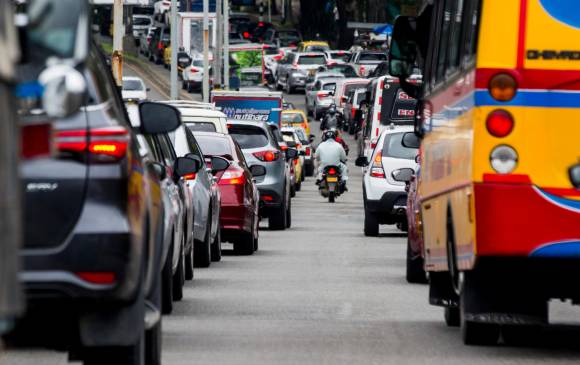

"El pico y placa no resolverá el problema",¿qué caminos quedan?
Congestiones interminables que van de sur a norte, de oriente a occidente, es el panorama de Medellín por estos días. Y el asunto pudiera ser igual al de hace algunos años; en realidad, la ciudad...
Para leer más haz click aqui